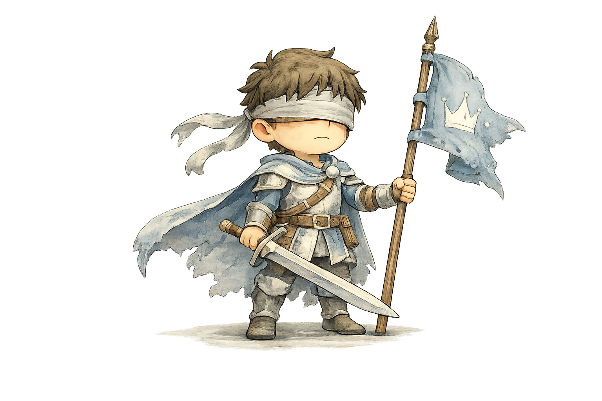
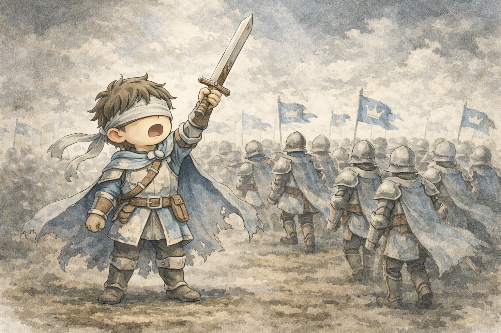

The Blind Hero

明確な「あるべき姿」を掲げ、他者をそこへ導くことに使命を感じる。
自分の正しさを疑わず、目的のためなら多少の犠牲は厭わない。
各項目が全体に占める割合

明確な「あるべき姿」を掲げ、他者をそこへ導くことに使命を感じる。自分の正しさを疑わず、目的のためなら多少の犠牲は厭わない。
カリスマ性、ビジョンの提示力、人を動かす言葉、決断力、不屈の精神
独善的、異論の排除、細部への無関心、足元の小さな犠牲に対する鈍感さ
あなたは常に「先頭」に立ち、誰も成し遂げられなかった場所へ旗を立てることに人生を捧げてきました。自ら理想を掲げ、その方向性を明確に示すことで、多くの人があなたの背中を追いかけ、熱狂的な賞賛と期待を向けてきたはずです。その高揚感と使命感は、あなたを前へ前へと突き動かしてきました。しかし、遠くにある輝かしい理想ばかりを見つめ続けるあまり、歩みの足元で踏みつけてしまった小さな花や、途中で立ち止まり、ついて来れなくなった人々の不安や涙に、気づく余裕を失っているのかもしれません。
使命感（正しい方向へ導こうとする）／主導性（自分が決めて動かす）／目的優先（過程の摩擦を軽視しがち）／対立耐性（反発されても進む）
自ら掲げた壮大なビジョンによって、多くの人の心が一つになり、不可能と思われた目標を達成したときの高揚感はありませんか。言葉一つで空気が変わり、人々の目に火が灯るあの瞬間。ある出来事をきっかけに、強烈な社会的使命感に目覚め、「自分はこの役割のために選ばれたのだ」と、運命のような確信を抱いた経験があるかもしれません。その確信が、あなたを「止まることを許されない役割」へと静かに押し出しているのかもしれません。
「敗北の受容と、持たざる者への共感」 自分の掲げた正義が間違っていたと認めるような挫折、あるいはリーダーという立場を降り、ただの一人の人間として弱音を吐くこと。 誰かに助けを求め、無力な自分を丸ごと受け入れてもらう経験を、あなたは「弱さ」として遠ざけてきたのではないでしょうか。しかし、敗北を知らない強さは、ときに残酷な武器へと変わります。
絶対的な正解を提示し続ける立場から一度降り、異なる価値観を持つ他者と対等な地平で向き合うことが、今のあなたには求められています。あなたの光に照らされなかった場所にも、別の正義や切実な事情が存在していることを認めること。カリスマという重い鎧を脱ぎ捨て、完璧な導き手ではなく、迷い、傷つきやすい一人の人間として手を差し出すこと。そこから始まる関係性こそが、あなたの本当の旅の入口になります。
あえて自分が主役ではない場所へ行き、最も立場の弱い人の雑用を手伝ったり、誰かの聞き役に徹したりしてみてください。 自分の意見や正論を一度封印し、最も声の小さい人の囁きに、全身で耳を傾けるのです。まばゆい光の中に答えはありません。あなたがこれまで見落としてきた「影」の中にこそ、今のあなたが必要としている真実が眠っています。